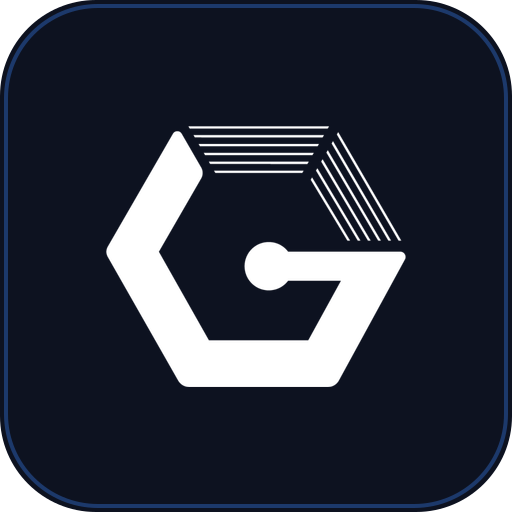

🏠 대시보드 — 오늘 무엇이 급한지 AI가 먼저 알려주는 자리입니다.
· 이 화면 설명 듣기
안녕하세요
오늘 무엇부터 볼지 AI가 아래에 정리해 뒀습니다.
1왼쪽 메뉴에서 화면을 고르면 탭으로 열립니다
2지시는 아래 대화창에 적습니다
3지금 보는 탭이 곧 지시의 대상입니다

서버 · 엔진 · 리소스상태 확인 중…
AI 팀 브리핑
오늘 상황을 확인하는 중입니다…
🔥 급한 것
불러오는 중…
☑ 오늘 할 일
불러오는 중…
📊 한눈에
불러오는 중…